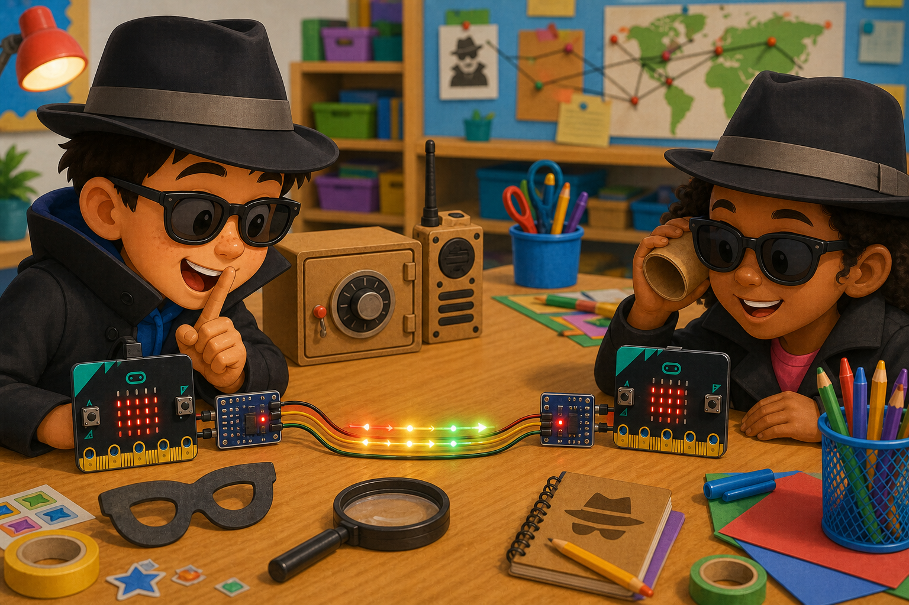

Treasure map tracker
DetectGPS sends a line
→
DecidePosition has changed
→
DoShow a clue
UART is a simple serial link that sends messages one bit after another.
Your micro:bit can use a TX pin to send and an RX pin to listen.
Use UART with GPS receivers, other boards, serial modules, or computer messages.

from microbit import *
uart.init(baudrate=9600, tx=pin0, rx=pin1)
uart.write('hello\n')
if uart.any():
message = uart.readline()
display.show(Image.YES)serial.redirect(
SerialPin.P0,
SerialPin.P1,
BaudRate.BaudRate9600
)
serial.writeLine("hello")TX to the micro:bit's RX, and the module's RX to the micro:bit's TX. Share GND too.